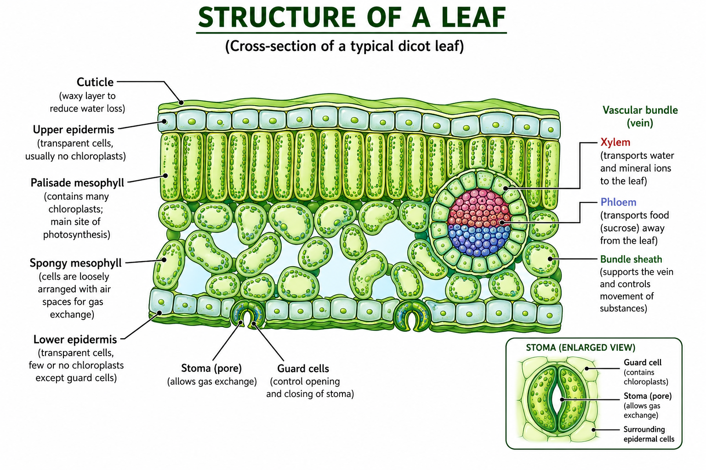

🌱 1. What is Plant Nutrition?
Nutrition is the process by which organisms obtain and use nutrients for energy, growth, repair and maintenance of the body.
Green plants are mainly autotrophic organisms. This means that they manufacture their own organic food from simple inorganic substances.
⭐ Key Idea
Green plants manufacture carbohydrates by photosynthesis, using carbon dioxide and water in the presence of light and chlorophyll.
🌿 2. Autotrophic Nutrition
Autotrophic nutrition is a mode of nutrition in which an organism makes its own organic food from simple inorganic substances.
Green plants are photoautotrophs because they use light energy to manufacture food.
Examples of materials needed by plants
- Carbon dioxide from the atmosphere
- Water absorbed by the roots
- Mineral ions from the soil
- Light energy from the Sun
☀️ 3. Photosynthesis
Photosynthesis is the process by which green plants manufacture carbohydrates from carbon dioxide and water using light energy absorbed by chlorophyll.
Photosynthesis mainly occurs in the chloroplasts of green plant cells.
📌 Definition to Remember
Photosynthesis is the process by which green plants make carbohydrates from carbon dioxide and water using light energy absorbed by chlorophyll.
🌞 4. Requirements for Photosynthesis
Photosynthesis requires several important conditions and raw materials.
| Requirement | Source | Importance |
|---|---|---|
| Carbon dioxide | Atmosphere | Provides carbon for making carbohydrates |
| Water | Soil | Provides hydrogen and is a raw material |
| Light | Sun | Provides the energy needed for photosynthesis |
| Chlorophyll | Chloroplasts | Absorbs light energy |
🧪 5. Photosynthesis Equation
The word equation for photosynthesis is:
Word Equation
Carbon dioxide + Water → Glucose + Oxygen
Light energy and chlorophyll are required.
The balanced chemical equation is:
Chemical Equation
6CO₂ + 6H₂O → C₆H₁₂O₆ + 6O₂
The reaction requires light energy and chlorophyll.
🍃 6. Chlorophyll
Chlorophyll is the green pigment found in chloroplasts of green plant cells.
Its main role in photosynthesis is to absorb light energy.
Remember
- Chlorophyll is a pigment.
- It is found in chloroplasts.
- It absorbs light energy.
- The absorbed light energy is used in photosynthesis.
💡 7. Importance of Light
Light provides the energy required for photosynthesis.
Increasing light intensity generally increases the rate of photosynthesis when light is the limiting factor.
If there is insufficient light, the rate of photosynthesis decreases.
🌬️ 8. Carbon Dioxide in Photosynthesis
Carbon dioxide enters a leaf from the atmosphere mainly through tiny openings called stomata.
Carbon dioxide provides the carbon needed to manufacture carbohydrates during photosynthesis.
💧 9. Water in Photosynthesis
Plants obtain water from the soil through their roots.
Water is transported from the roots to the leaves mainly through the xylem vessels.
Water is one of the raw materials required for photosynthesis.
🍃 10. Structure of a Leaf
The leaf is the main organ where photosynthesis occurs in most green plants.
A typical leaf has several structures that are adapted for photosynthesis and gas exchange.
🖼️ Plant Leaf Diagram
The diagram below shows the main structures of a typical leaf and features involved in photosynthesis.

Important: Learn the position, structure and function of each labelled part.
🌿 11. Adaptations of a Leaf for Photosynthesis
Leaves are well adapted for photosynthesis.
| Feature | Adaptation / Function |
|---|---|
| Large surface area | Provides a large area for absorbing light. |
| Thin structure | Provides a short distance for gases to diffuse through the leaf. |
| Transparent upper epidermis | Allows light to reach the photosynthetic cells. |
| Palisade mesophyll | Contains many chloroplasts and is close to the upper surface, allowing efficient absorption of light. |
| Spongy mesophyll | Contains air spaces that allow gases to diffuse through the leaf. |
| Stomata | Allow carbon dioxide to enter and oxygen to leave. |
| Guard cells | Control the opening and closing of stomata. |
| Xylem | Transports water and mineral ions to the leaf. |
| Phloem | Transports sucrose and other assimilates away from photosynthetic tissues. |
| Air spaces | Provide pathways for movement of gases inside the leaf. |
🔬 12. Epidermis and Cuticle
Upper and Lower Epidermis
The epidermis forms the outer protective layer of the leaf.
Epidermal cells usually contain few or no chloroplasts, except for guard cells.
Cuticle
The cuticle is a waxy layer covering the epidermis.
It helps reduce water loss from the leaf by evaporation.
🌞 13. Palisade Mesophyll
Palisade mesophyll cells are found beneath the upper epidermis.
They contain many chloroplasts and are therefore important sites of photosynthesis.
Why are palisade cells near the upper surface?
They are positioned close to the source of light, allowing them to receive a high intensity of light for photosynthesis.
🌬️ 14. Spongy Mesophyll
The spongy mesophyll lies below the palisade mesophyll.
Its cells are loosely arranged, leaving air spaces between them.
These air spaces allow carbon dioxide and oxygen to move through the leaf.
🚪 15. Stomata and Guard Cells
A stoma is a tiny pore found mainly in the epidermis of a leaf.
Each stoma is surrounded by two guard cells.
Stomata allow gases to move into and out of the leaf.
Main functions of stomata
- Allow carbon dioxide to enter the leaf.
- Allow oxygen to leave the leaf.
- Allow water vapour to leave the leaf during transpiration.
🚰 16. Vascular Bundles
The veins of a leaf contain vascular tissues.
Xylem
Xylem transports water and dissolved mineral ions from the roots to the leaves.
Phloem
Phloem transports sucrose and other organic substances made by the plant.
🍬 17. What Happens to the Glucose Made?
Glucose produced during photosynthesis can be used in several ways.
| Product / Substance | Use |
|---|---|
| Glucose | Used in respiration to release energy. |
| Starch | Used as a storage form of carbohydrate. |
| Sucrose | Used as a transport form of carbohydrate. |
| Cellulose | Used to make plant cell walls. |
| Amino acids / proteins | Carbohydrates provide carbon skeletons and energy for synthesis; nitrogen is also needed. |
| Lipids | Can be produced from carbohydrates and used for energy storage and cell structures. |
🌾 18. Starch as a Storage Product
Plants commonly convert excess glucose into starch for storage.
Starch is useful as a storage material because it is relatively insoluble in water and therefore does not easily affect the water potential of cells.
Stored starch can later be broken down into sugars when the plant needs them.
🚚 19. Sucrose and Translocation
Glucose can be converted into sucrose, which is the main carbohydrate transported through the phloem.
The movement of organic substances through the phloem is called translocation.
🧱 20. Cellulose
Glucose molecules can be joined together to form cellulose.
Cellulose is an important component of plant cell walls.
🧪 21. Investigating the Need for Light
An experiment can be carried out to show that light is necessary for photosynthesis.
Experiment
- Place a healthy green plant in darkness for about 24–48 hours to remove stored starch.
- Cover part of a leaf with opaque material so that light cannot reach that part.
- Place the plant in bright light for several hours.
- Remove the leaf.
- Boil the leaf in water to kill the cells and stop chemical reactions.
- Heat the leaf in ethanol using a suitable water-bath method to remove chlorophyll.
- Rinse the leaf in warm water to soften it.
- Add iodine solution.
Expected Result
The part exposed to light turns blue-black because starch is present.
The covered part does not turn blue-black if it did not receive sufficient light.
Conclusion
Light is necessary for photosynthesis.
🍃 22. Investigating the Need for Chlorophyll
A variegated leaf can be used to investigate whether chlorophyll is necessary for photosynthesis.
Method
- Destarch a variegated plant.
- Place it in bright light for several hours.
- Remove a leaf.
- Test the leaf for starch using iodine solution.
Result
The green regions turn blue-black, while areas without chlorophyll do not.
Conclusion
Chlorophyll is necessary for photosynthesis.
🌬️ 23. Investigating the Need for Carbon Dioxide
Carbon dioxide is another essential requirement for photosynthesis.
Basic Experimental Design
Two similar destarched plants can be placed under the same light conditions. One is supplied with carbon dioxide, while the other is kept in conditions where carbon dioxide is removed or unavailable.
After exposure to light, the leaves can be tested for starch.
Conclusion
The plant supplied with carbon dioxide forms starch, demonstrating that carbon dioxide is necessary for photosynthesis.
🌙 24. Why is a Plant Destarched?
A plant is kept in darkness before certain photosynthesis experiments to use up stored starch.
This ensures that any starch detected after the experiment was produced during the experiment rather than being leftover from before it began.
Exam Point
Destarching removes or greatly reduces stored starch so that the experiment starts with a controlled starch level.
🧪 25. Testing a Leaf for Starch
| Step | Purpose |
|---|---|
| Boil leaf in water | Kills the cells and stops metabolic reactions. |
| Heat in ethanol | Removes chlorophyll. |
| Rinse in warm water | Softens the leaf after ethanol treatment. |
| Add iodine solution | Tests for starch. |
Positive Test
Iodine turns blue-black when starch is present.
📈 26. Rate of Photosynthesis
The rate of photosynthesis describes how quickly photosynthesis is occurring.
It can be estimated by measuring the amount of oxygen produced over a particular period of time.
For example, when an aquatic plant is used, the number of oxygen bubbles produced in a given time can provide an estimate of the rate.
Important
Counting bubbles is only an estimate because bubbles may differ in size. Measuring the actual volume of oxygen produced is generally more accurate.
💡 27. Effect of Light Intensity
Increasing light intensity generally increases the rate of photosynthesis when light is the limiting factor.
However, the rate eventually reaches a point where increasing light intensity produces little or no further increase.
At this point another factor, such as carbon dioxide concentration or temperature, may be limiting.
🌬️ 28. Effect of Carbon Dioxide Concentration
Increasing carbon dioxide concentration can increase the rate of photosynthesis when carbon dioxide is the limiting factor.
Eventually, the rate reaches a maximum because another factor becomes limiting.
🌡️ 29. Effect of Temperature
Photosynthesis involves enzyme-controlled reactions, so temperature affects its rate.
At low temperatures, the reactions occur slowly.
As temperature increases, the rate generally increases up to an optimum temperature.
At temperatures that are too high, enzymes can become denatured and the rate of photosynthesis decreases.
🚦 30. Limiting Factors
A limiting factor is a factor that is preventing a process from occurring at a faster rate.
The main limiting factors of photosynthesis studied at O/L include:
- Light intensity
- Carbon dioxide concentration
- Temperature
Example
If light intensity is low, increasing carbon dioxide may have little effect because light is still limiting photosynthesis.
📊 31. Understanding Limiting-Factor Graphs
Graph questions involving photosynthesis are common in examinations.
| Graph Situation | Meaning |
|---|---|
| Rate rises as light increases | Light is limiting in that range. |
| Rate becomes constant as light increases | Another factor has become limiting. |
| Rate rises with CO₂ concentration | Carbon dioxide is limiting in that range. |
| Rate decreases at very high temperature | Enzyme activity is being adversely affected. |
🔬 32. Investigating Light Intensity Experimentally
A submerged aquatic plant can be used to investigate how light intensity affects photosynthesis.
Variables
Independent variable: Distance from the light source.
Dependent variable: Rate of oxygen production.
Control variables: Temperature, type and length of plant, carbon dioxide concentration and volume of water.
Expected Result
Moving the plant closer to the light source generally increases light intensity and increases the rate of photosynthesis until another factor becomes limiting.
🧪 33. Hydrogencarbonate Indicator
Hydrogencarbonate indicator can be used to investigate changes in carbon dioxide concentration.
Changes in carbon dioxide concentration cause a change in the indicator's colour.
Experimental Principle
A photosynthesising plant removes carbon dioxide from its surroundings. Changes in the carbon dioxide concentration can therefore be detected using an indicator.
🧂 34. Mineral Nutrition
Plants need mineral ions in addition to water and carbon dioxide.
Mineral ions are absorbed from the soil, usually as dissolved ions through the roots.
Different mineral ions have different functions in plant growth and metabolism.
🧪 35. Nitrate Ions
Nitrate ions are an important source of nitrogen for plants.
Nitrogen is needed to make amino acids, which are used to make proteins.
Nitrate → Amino Acids → Proteins
Without sufficient nitrate ions, plants cannot make enough amino acids and proteins for normal growth.
⚠️ 36. Effects of Nitrate Deficiency
A plant suffering from nitrate deficiency has insufficient nitrogen for normal protein production.
This can lead to:
- Poor growth
- Stunted plants
- Reduced protein production
- Yellowing of older leaves
🟢 37. Magnesium Ions
Magnesium ions are needed by plants to manufacture chlorophyll.
Chlorophyll is required to absorb light energy for photosynthesis.
Magnesium → Chlorophyll → Photosynthesis
A shortage of magnesium can therefore reduce chlorophyll production and reduce photosynthesis.
⚠️ 38. Effects of Magnesium Deficiency
Magnesium deficiency can cause yellowing of leaves, because insufficient chlorophyll is produced.
This condition is called chlorosis.
Reduced chlorophyll means less light can be absorbed, which can reduce the rate of photosynthesis.
🌾 39. Fertilizers and Plant Growth
Fertilizers are substances added to soil to provide mineral nutrients needed by plants.
Fertilizers may contain nutrients such as nitrogen, phosphorus and potassium.
Example
Nitrogen-containing fertilizers can provide nitrate sources needed for amino acid and protein production.
📋 40. Mineral Deficiency Summary
| Mineral Ion | Main Importance | Deficiency Effect |
|---|---|---|
| Nitrate | Needed to make amino acids and proteins. | Poor growth and yellowing of older leaves. |
| Magnesium | Needed to make chlorophyll. | Yellowing of leaves and reduced photosynthesis. |
🌍 41. Importance of Photosynthesis
Photosynthesis is one of the most important biological processes on Earth.
- It produces carbohydrates that plants use as food.
- It provides chemical energy stored in organic molecules.
- It provides food for plants and, directly or indirectly, for other organisms.
- It releases oxygen into the atmosphere.
- It provides organic materials used to build plant tissues.
- It forms the foundation of most food chains.
🐛 42. Photosynthesis and Food Chains
Green plants are producers because they manufacture organic food.
Animals and other organisms obtain energy by feeding directly or indirectly on producers.
Example
Grass → Grasshopper → Frog → Snake
The energy entering this food chain ultimately originates from sunlight captured by plants during photosynthesis.
🔄 43. Photosynthesis vs Respiration
| Photosynthesis | Respiration |
|---|---|
| Makes glucose from simpler substances. | Breaks down glucose to release energy. |
| Requires light energy. | Does not require light. |
| Mainly occurs in chloroplasts of photosynthetic cells. | Mainly occurs in mitochondria for aerobic respiration. |
| Carbon dioxide is used. | Carbon dioxide is produced during aerobic respiration. |
| Oxygen is produced. | Oxygen is used in aerobic respiration. |
🧠 44. Complete Photosynthesis Summary
Light energy is absorbed by chlorophyll in chloroplasts.
Carbon dioxide enters the leaf through stomata .
Water is absorbed by roots and transported to leaves through the xylem .
The plant uses these raw materials and light energy to manufacture glucose .
Oxygen is released as a product.
Glucose can be used in respiration, converted to starch for storage, converted to sucrose for transport, or used to manufacture substances such as cellulose.
📖 45. Important Definitions
| Term | Definition |
|---|---|
| Nutrition | The process by which organisms obtain and use nutrients. |
| Autotrophic nutrition | Nutrition in which an organism manufactures its own organic food from simple inorganic substances. |
| Photosynthesis | The process by which green plants manufacture carbohydrates from carbon dioxide and water using light energy absorbed by chlorophyll. |
| Chlorophyll | A green pigment that absorbs light energy in chloroplasts. |
| Stoma | A pore in the leaf epidermis through which gases can move. |
| Guard cells | Cells surrounding a stoma that control its opening and closing. |
| Limiting factor | A factor that restricts the rate of a process when it is in short supply or at an unsuitable level. |
| Mineral ion | An inorganic ion absorbed by plants and needed for growth and metabolism. |
| Chlorosis | Yellowing of plant leaves caused by a reduction in chlorophyll. |
| Translocation | The transport of organic substances such as sucrose through the phloem. |
📝 46. O/L GCE Exam Focus
⭐ Know These Very Well
- Definition of photosynthesis
- Word equation for photosynthesis
- Balanced chemical equation
- Requirements for photosynthesis
- Role of chlorophyll
- Sources of carbon dioxide and water
- Leaf adaptations for photosynthesis
- Functions of stomata and guard cells
- Functions of xylem and phloem
- Fate of glucose
- Starch test
- Experiments showing the need for light, chlorophyll and carbon dioxide
- Effects of light intensity, carbon dioxide concentration and temperature
- Limiting factors
- Importance of nitrate ions
- Importance of magnesium ions
- Effects of mineral deficiencies
⚠️ 47. Common O/L Mistakes
❌ Mistake 1
Saying that plants get their food directly from the soil.
Correct: Plants absorb water and mineral ions from the soil. They manufacture carbohydrates through photosynthesis.
❌ Mistake 2
Saying chlorophyll is the source of energy.
Correct: Light is the energy source. Chlorophyll absorbs the light energy.
❌ Mistake 3
Saying plants only respire during the night.
Correct: Respiration occurs continuously, day and night.
❌ Mistake 4
Saying oxygen is a raw material for photosynthesis.
Correct: Carbon dioxide and water are the main raw materials. Oxygen is a product.
❌ Mistake 5
Saying glucose is always stored directly.
Correct: Excess glucose can be converted into starch for storage.
🔄 48. Quick Revision
🌞 Light provides energy.
🍃 Chlorophyll absorbs light energy.
🌬️ Carbon dioxide enters through stomata.
💧 Water is absorbed by roots and transported by xylem.
🍬 Glucose is produced by photosynthesis.
💨 Oxygen is released.
🌾 Starch is a storage form of carbohydrate.
🚚 Sucrose is transported through phloem.
🧱 Cellulose is used in plant cell walls.
🧪 Nitrate ions are needed for amino acids and proteins.
🟢 Magnesium ions are needed for chlorophyll.
🚦 Limiting factors include light intensity, carbon dioxide concentration and temperature.
✅ 49. Final Exam Checklist
Before the exam, make sure you can:
- ☐ Define photosynthesis.
- ☐ Write the word equation.
- ☐ Write the balanced chemical equation.
- ☐ State the requirements for photosynthesis.
- ☐ Explain the role of chlorophyll.
- ☐ Explain how carbon dioxide enters a leaf.
- ☐ Explain how water reaches the leaf.
- ☐ Draw and label a leaf cross-section.
- ☐ Explain how each leaf structure is adapted for photosynthesis.
- ☐ Explain the function of stomata and guard cells.
- ☐ Explain the roles of xylem and phloem.
- ☐ Explain what happens to glucose after photosynthesis.
- ☐ Carry out and explain the starch test.
- ☐ Explain why plants are destarched before photosynthesis experiments.
- ☐ Describe experiments showing that light is needed.
- ☐ Describe an experiment showing that chlorophyll is needed.
- ☐ Describe an experiment showing that carbon dioxide is needed.
- ☐ Explain the effects of light intensity, carbon dioxide concentration and temperature.
- ☐ Identify limiting factors.
- ☐ Explain the importance of nitrate ions.
- ☐ Explain the importance of magnesium ions.
- ☐ Identify symptoms of mineral deficiency.
- ☐ Explain the importance of photosynthesis to food chains and life.